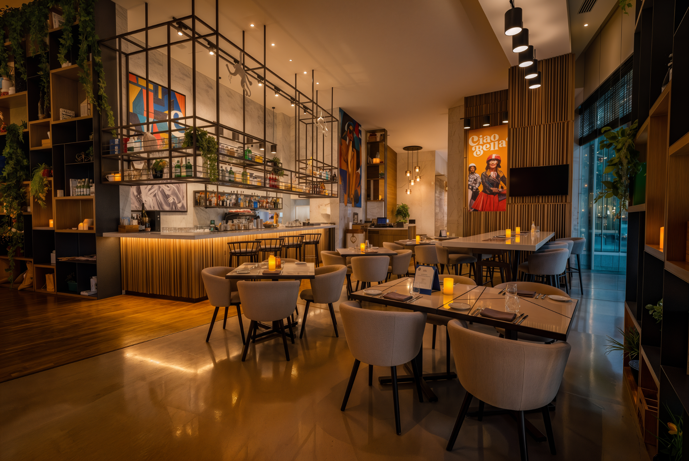ASSET 01 · 2048 × 1373Primary Ciao Bella cardSuggested crop: 4:3 or 3:2. Keep bar and foreground table together; avoid tight portrait crop.Interior atmosphere; no menu or opening-hour inference.Ciao Bella - Interior 2026 - Night.png
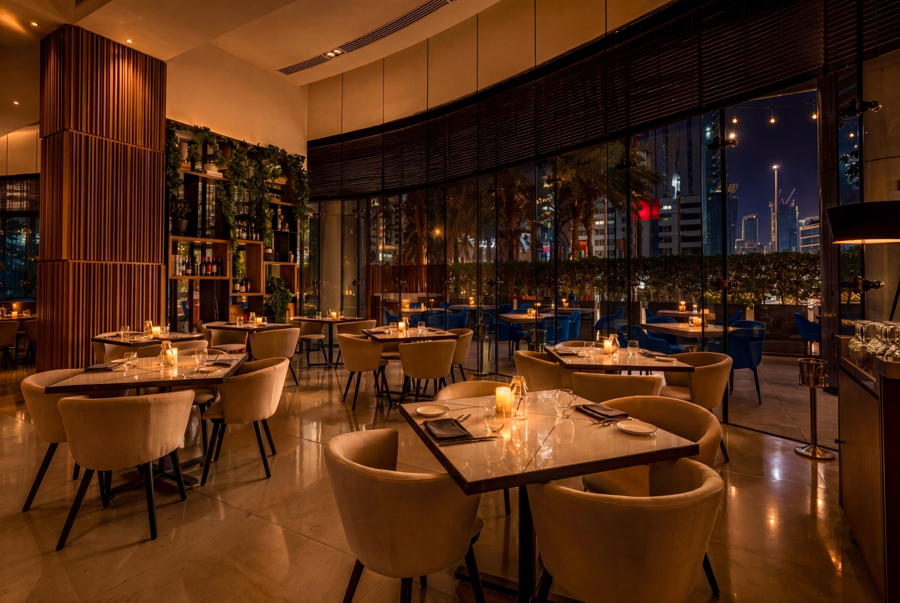ASSET 02 · 2048 × 1373Ciao Bella detail heroSuggested crop: 3:2. Keep candlelit foreground table and curved windows.Warm evening atmosphere.Ciao Bella 2026 Interior - Night 2.jpg
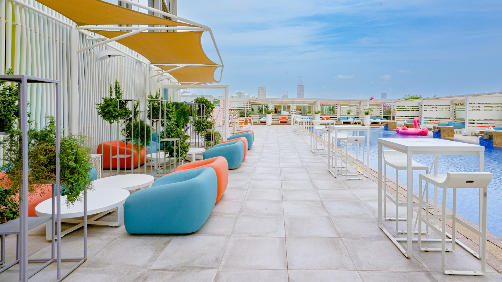ASSET 03 · 2048 × 1152Coco Lounge discovery cardSuggested crop: 4:3. Retain colourful seating and terrace depth.Strong daylight colour; no pool entitlement implied.Coco Lounge - Restaurant - Day - Media One Hotel (2).jpg
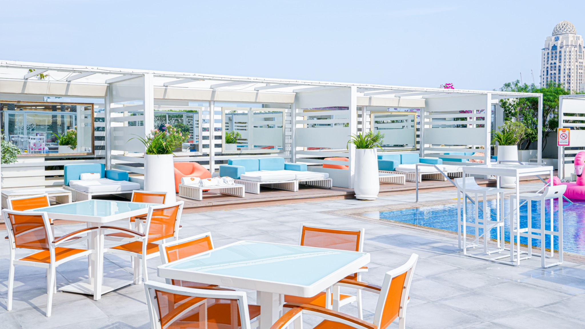ASSET 04 · 2048 × 1152Coco Lounge gallerySuggested crop: 3:2. Keep pool context and seating; avoid overcropping white furniture.Good supporting view.Coco Lounge - Restaurant - Day - Media One Hotel (5).jpg
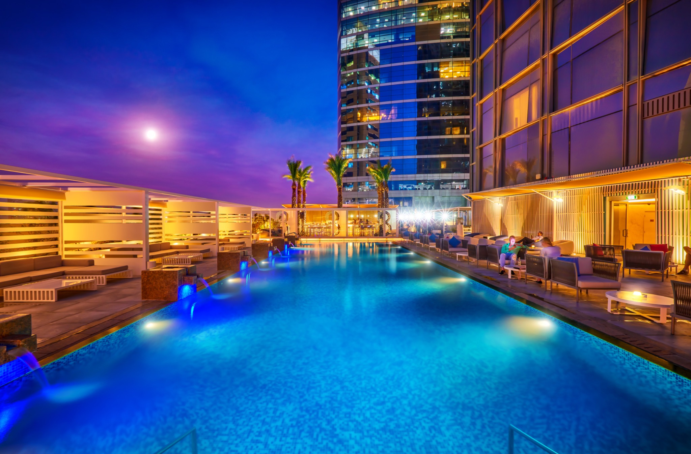ASSET 05 · 2048 × 1347Home hero candidate / Coco heroSuggested crop: 3:2 or 4:3. Preserve pool leading line and illuminated building. Keep text off brightest lights.Strong evening colour; image does not establish pool hours.Coco Lounge - Restaurant - Night - Media One Hotel (6).jpg
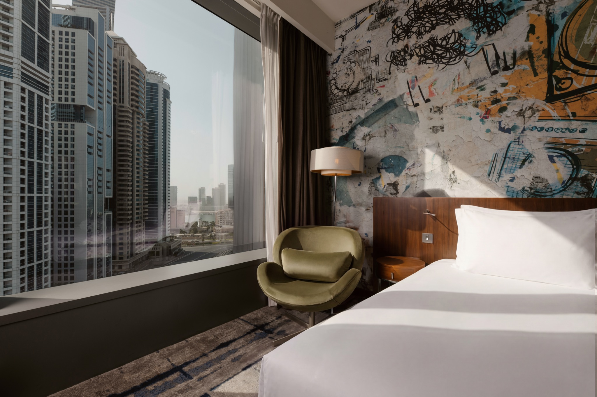ASSET 06 · 2048 × 1365Chill Out Suite bedroom gallerySuggested crop: 3:2. Keep bed and window view together.Suite specific; never label as a standard room.Hero Bedroom View - One-Bedroom Chill Out Suite - 1905 - Media One Hotel.jpg
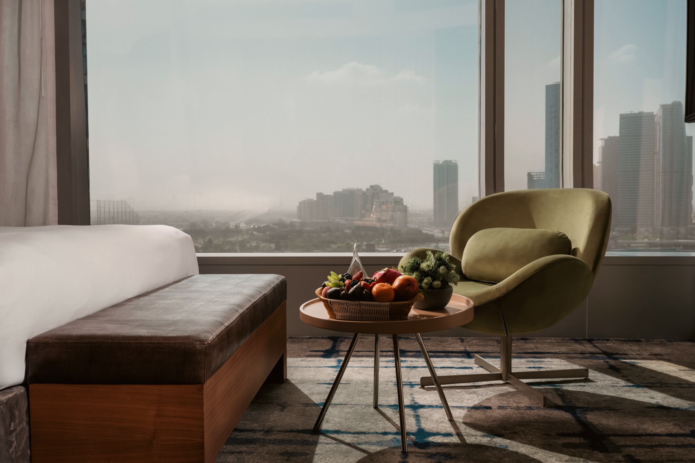ASSET 07 · 2048 × 1365Calm Suite detail gallerySuggested crop: 3:2. Retain chair, coffee table and window.Room class follows supplied filename.Hero Detail - Junior Calm Suite - 1106 - Media One Hotel.jpg
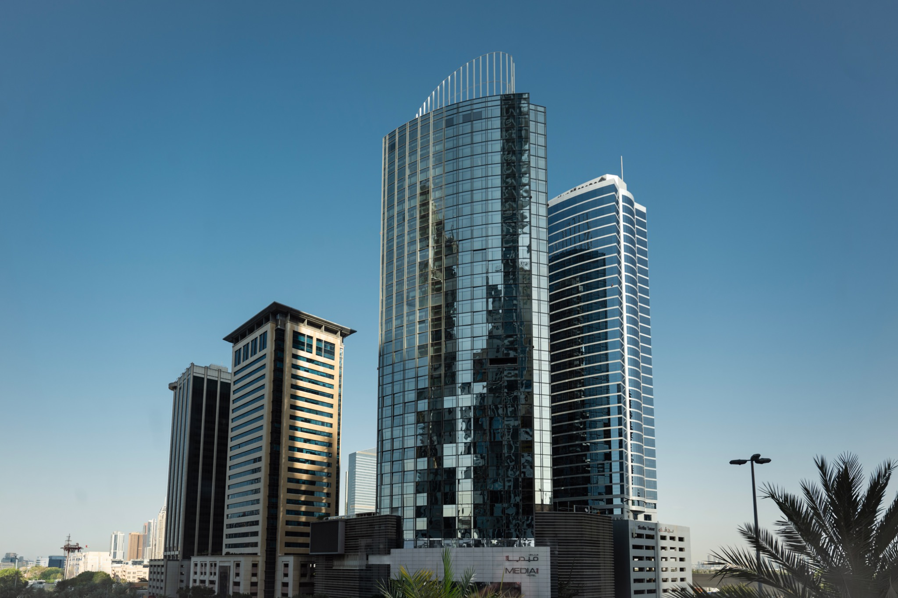ASSET 08 · 2048 × 1365Hotel information / arrivalSuggested crop: 3:2. Retain full tower top; use contain or a wide crop if necessary.Orientation image, not preferred lifestyle home hero.Hero Exterior - Media One Hotel(20261026-220455).jpg
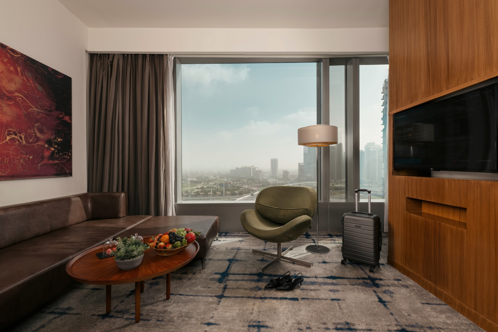ASSET 09 · 2048 × 1365Chill Out Suite living areaSuggested crop: 3:2. Preserve sofa and view.Do not imply every room has a separate living area.Hero Living Room - One-Bedroom Chill Out Suite - 1905 - Media One Hotel.jpg
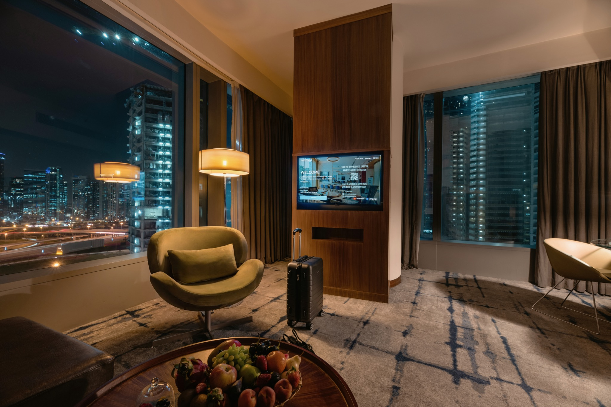ASSET 10 · 2048 × 1365Chill Out Suite secondary gallerySuggested crop: 3:2. Keep chair and skyline; avoid overlays on city lights.Night alternative, not another room category.Hero Night Living Room - One-Bedroom Chill Out Suite - 1905 - Media One Hotel.jpg
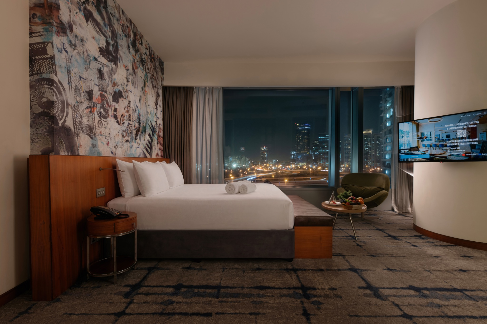ASSET 11 · 2048 × 1365Calm Suite night gallerySuggested crop: 3:2. Keep full bed and window.Use alongside day view.Hero Night Room - Junior Calm Suite - 1106 - Media One Hotel.jpg
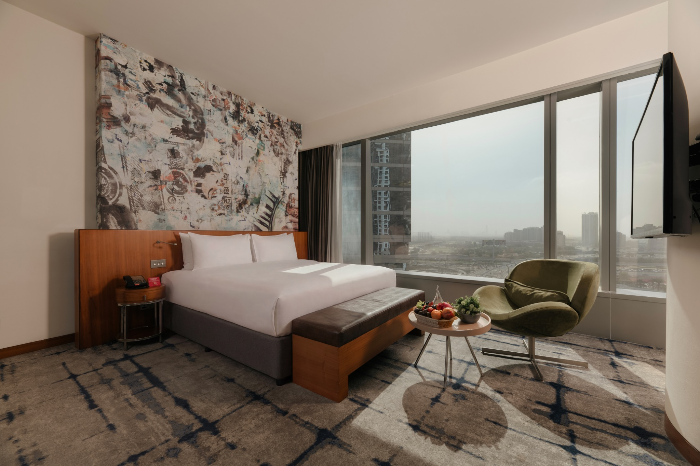ASSET 12 · 2048 × 1365Primary room discovery cardSuggested crop: 4:3 or 3:2. Keep bed, mural and window; avoid making room appear larger through distortion.Label Junior Calm Suite, not generic standard room.Hero Room - Junior Calm Suite - 1106 - Media One Hotel.jpg
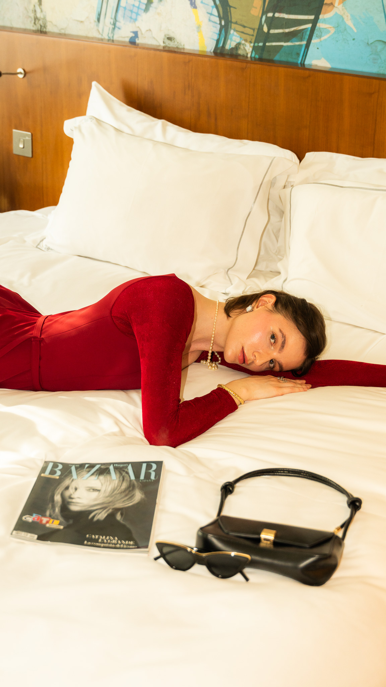ASSET 13 · 1152 × 2048Portrait lifestyle featureSuggested crop: 4:5. Preserve person and bed; inspect face position at narrow widths.Editorial lifestyle, not a specific room specification.Lifestyle - Media One Hotel (8).jpg
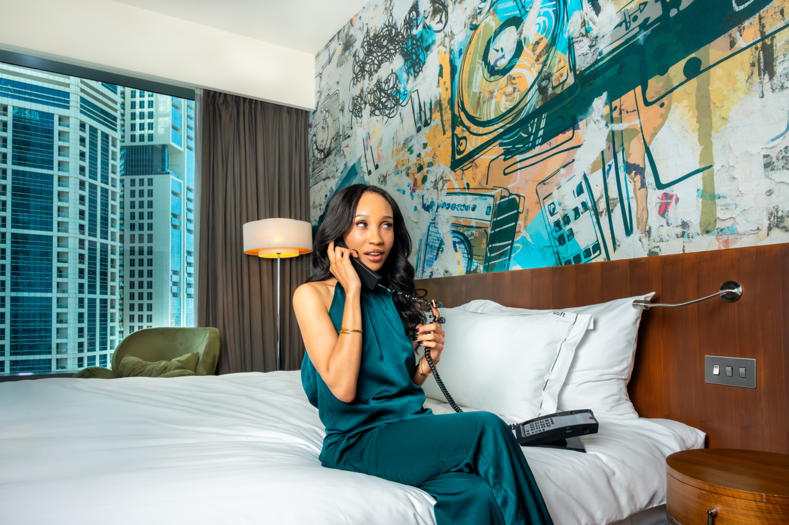ASSET 14 · 2048 × 1365Home editorial hero candidateSuggested crop: 4:3. Retain person, mural and window; place copy outside image if crop is tight.Strong brand character; no room type inferred.M1 - Lifestyle Rooms - 11.jpg
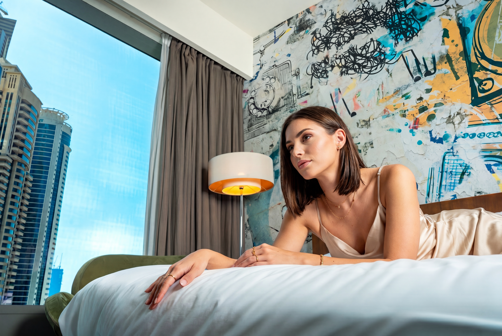ASSET 15 · 2048 × 1373Room lifestyle supporting featureSuggested crop: 4:3. Keep face and window; text below rather than over face.Supporting editorial image.M1 - Lifestyle Rooms - 4.png
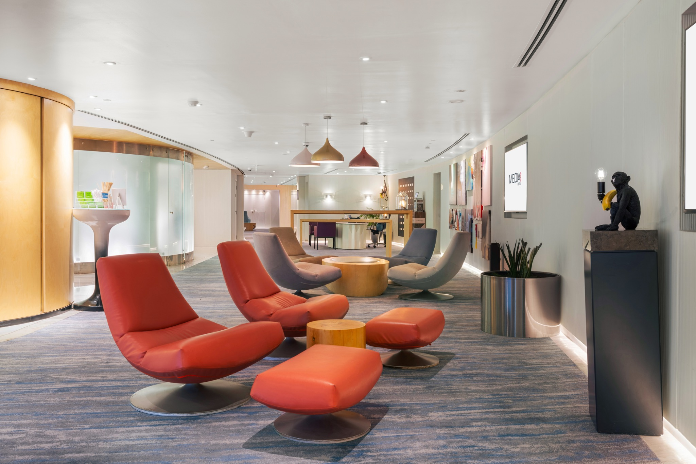ASSET 16 · 2048 × 1365Meetings gallerySuggested crop: 3:2. Keep red chairs and corridor depth.Meeting breakout area, not hotel reception.Meeting Room - Coffee Break - Media One Hotel (3).jpg
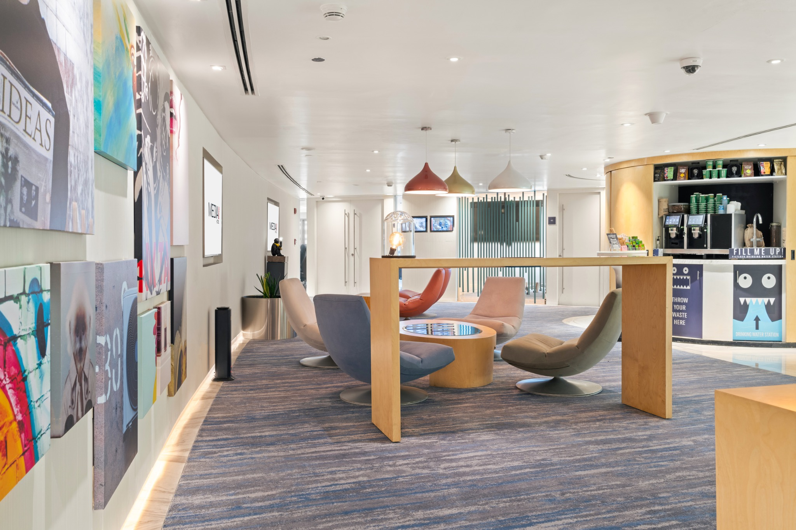ASSET 17 · 2048 × 1365Meetings supporting gallerySuggested crop: 3:2. Keep table and breakout setting.No room capacity inferred.Meeting Room - Coffee Break - Media One Hotel (9).jpg
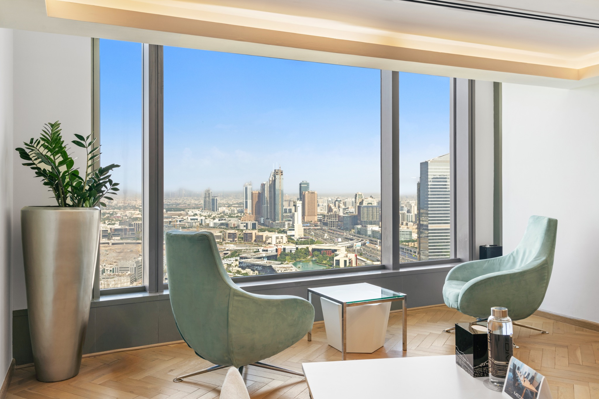ASSET 18 · 2048 × 1365Meetings lead cardSuggested crop: 4:3. Keep window and seating.Filename identifies meeting room Instagram; not a social-media screenshot.Meeting Room - Instagram - Media One Hotel (4).jpg
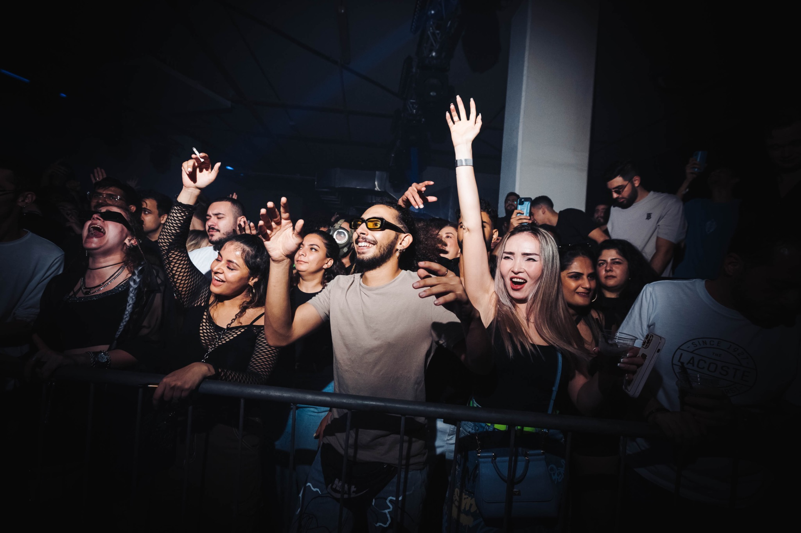ASSET 19 · 2048 × 1365P7 event atmosphereSuggested crop: 3:2. Preserve crowd context and raised hands.Historical atmosphere only; not an upcoming event announcement.Music Event - P7 Arena - Media One Hotel (15)(1).jpg
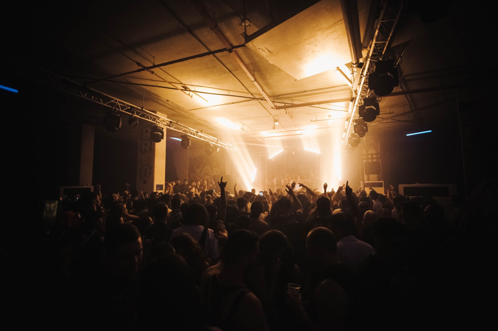ASSET 20 · 2048 × 1365P7 detail heroSuggested crop: 3:2. Keep venue scale and stage light.No event date, performer or availability inferred.Music Event - P7 Arena - Media One Hotel (20).jpg
ASSET 21 · 2048 × 1365P7 supporting editorialSuggested crop: 4:3. Preserve phone silhouette and stage glow.Atmosphere detail, not the main venue identification image.Music Event - P7 Arena - Media One Hotel (36).jpg
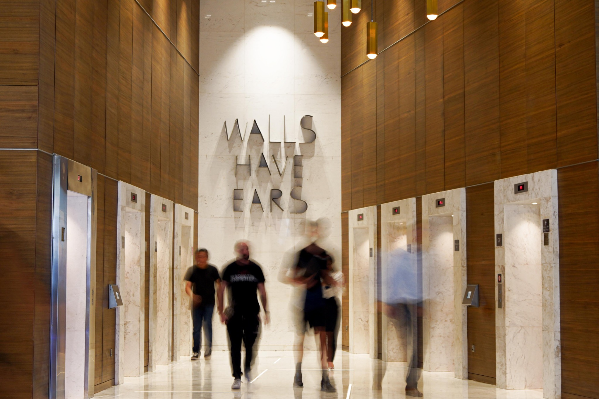ASSET 22 · 2047 × 1365Office tower information onlySuggested crop: 3:2. Keep WALLS HAVE EARS feature and full height.Do not substitute for hotel reception or guest lobby.Office Tower Lobby - Media One Hotel.jpg
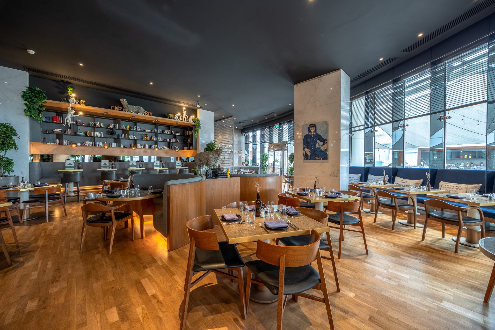ASSET 23 · 2048 × 1365Primary Qwerty cardSuggested crop: 4:3. Keep bar, tables and daylight; avoid crop isolating only glass.Daylight restaurant atmosphere.Qwerty - Restaurant - Day - Media One Hotel (17).jpg
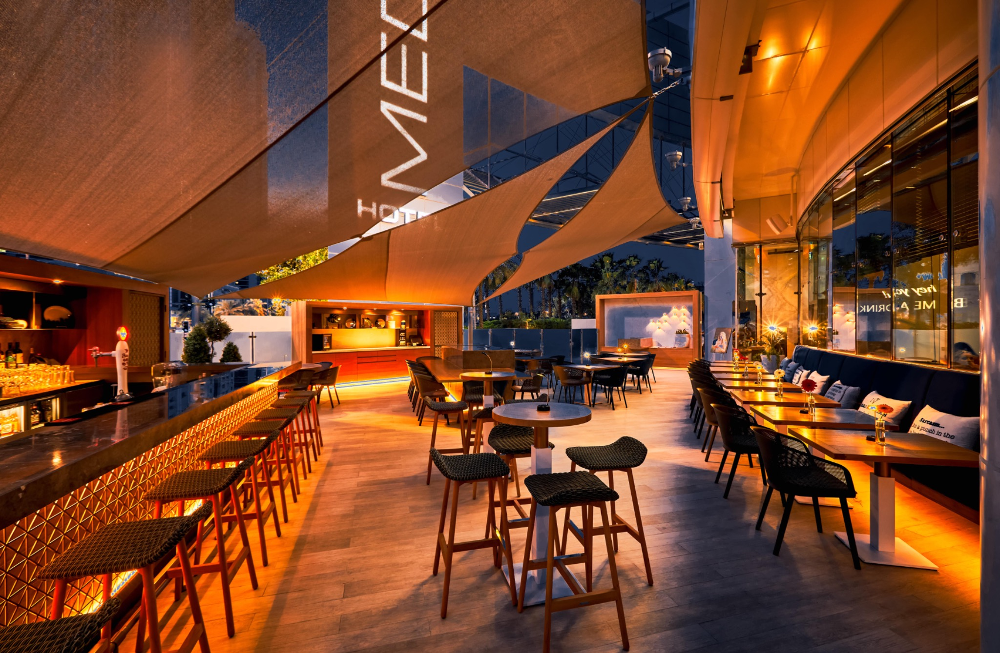ASSET 24 · 2048 × 1339Qwerty detail heroSuggested crop: 3:2. Keep bar perspective and illuminated venue lettering.Evening alternative.Qwerty - Restaurant - Night - Media One Hotel (1).jpg
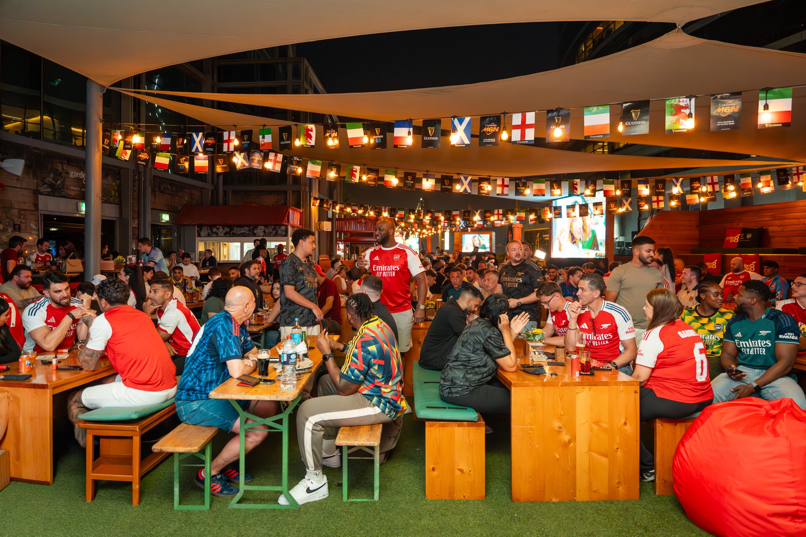ASSET 25 · 2048 × 1365garden on 8 sport discoverySuggested crop: 4:3. Keep audience and sports-bar context; avoid tiny text over crowd.Atmosphere, not a current fixture or package promise.garden on 8 - Football Match (4).jpg
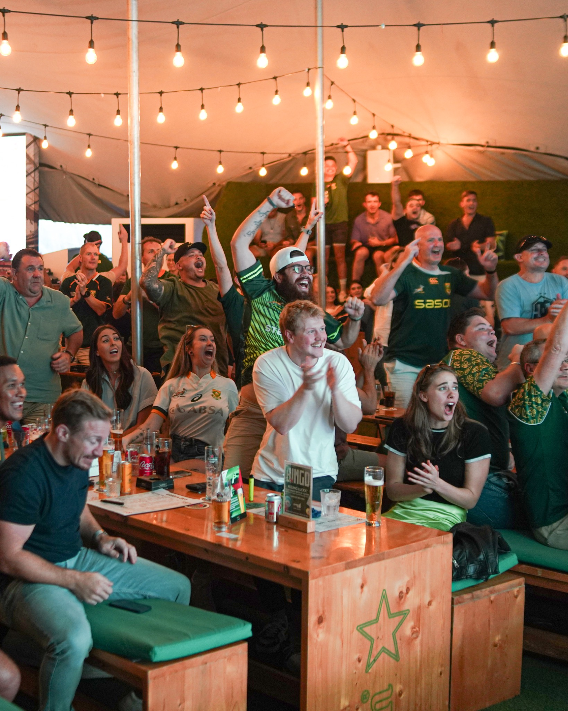ASSET 26 · 1638 × 2048Primary garden on 8 portrait cardSuggested crop: 4:5. Preserve raised hands, guests and string lights.Strong social identity; good mobile asset.garden on 8 - Lifestyle - Media One Hotel (10)(1).jpg
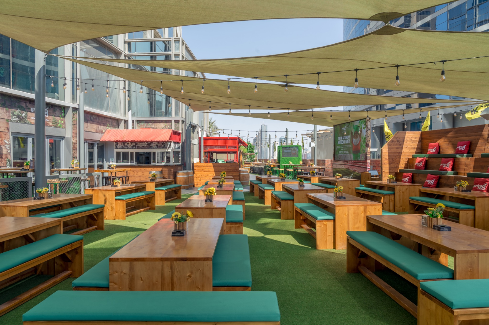ASSET 27 · 2048 × 1365garden on 8 detail hero / gallerySuggested crop: 3:2. Keep terrace seating, canopy and depth.Useful physical venue view; pair with lifestyle image.garden on 8 - Terrace Restaurant - Day - Media One Hotel (5)(1).jpg